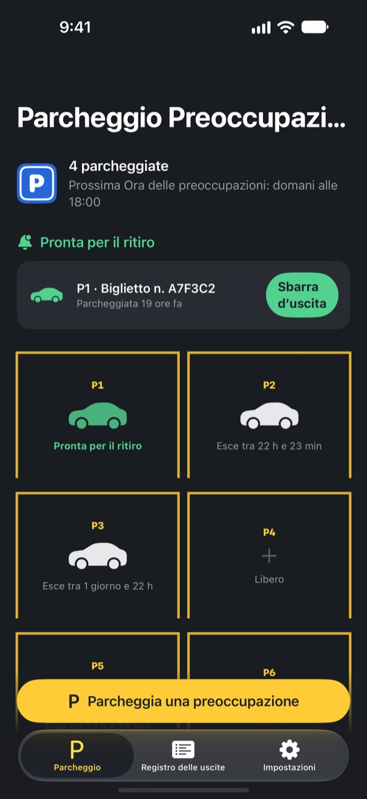
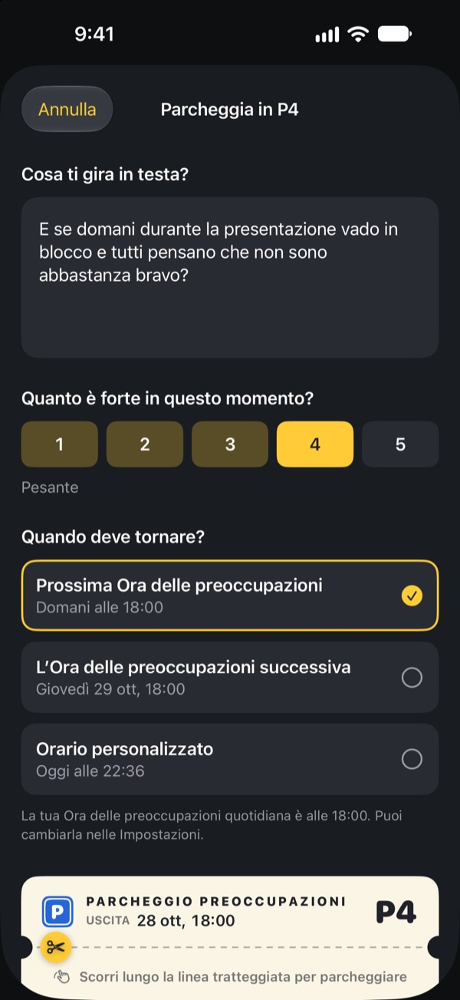
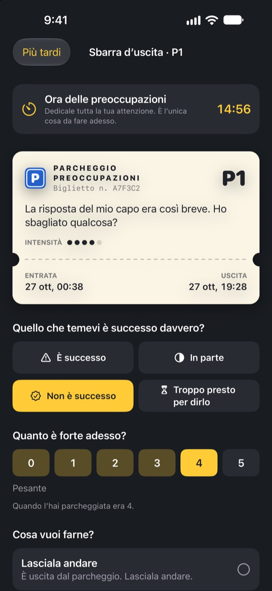
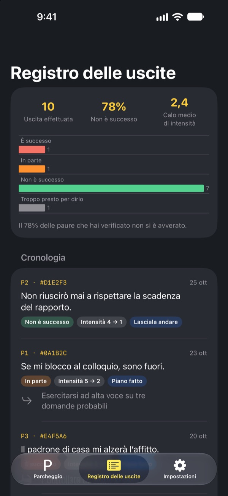

Parcheggia la preoccupazione.
Riprendila dopo.
Scrivi quello che ti gira in testa prima di dormire e lascialo su un biglietto del parcheggio. Te lo riportiamo all’Ora delle preoccupazioni. Fino ad allora, non devi portartelo dietro.
Tutte le funzioni sono gratis. Niente pubblicità, niente account.

Parcheggia una preoccupazione
Lascia l’esempio o scrivi quello che hai in testa adesso. Una volta parcheggiata diventa sfocata, e la riprendi all’Ora delle preoccupazioni.
Luce spenta, testa accesa?
Appena appoggi la testa sul cuscino, comincia: una frase detta oggi, la riunione di domani, il messaggio ancora senza risposta. Più ti dici di non pensarci, più diventa forte. Parcheggio Preoccupazioni non ti chiede di scacciarla. La scrivi, le dai un posto e fissi un momento per occupartene.
Scritta, esce dalla testa
Scrivila esattamente come la senti in testa e indica quanto è forte adesso, da 1 a 5. Strappa il biglietto e la preoccupazione resta nel parcheggio, sfocata.
Se torna a girarti intorno, dille: hai già il tuo posto. Il tuo momento arriverà, ma non ora.

15 minuti all’Ora delle preoccupazioni
Ogni giorno, all’Ora delle preoccupazioni, arriva un promemoria. Alla sbarra d’uscita la rileggi, controlli se è successa davvero e quanto è forte adesso.
Poi la lasci andare, la trasformi in un piccolo passo successivo o la parcheggi di nuovo fino alla prossima Ora delle preoccupazioni.

Scopri quante preoccupazioni si sono avverate
Man mano che le preoccupazioni escono, il registro delle uscite mostra quante sono successe davvero e quanto è calata la loro intensità.
La preoccupazione tende a immaginare il futuro peggiore di com’è. Più registri, meno credi alla prossima.

Si parte in tre passi
- 1
Scegli la tua Ora delle preoccupazioni
Alla prima apertura scegli quando occuparti delle preoccupazioni ogni giorno. Puoi cambiarla poi nelle Impostazioni.
- 2
Parcheggia una preoccupazione vera
Parcheggia subito qualcosa che ti pesa e nota come cambia l’intensità prima e dopo.
- 3
Consenti i promemoria di ritiro
All’Ora delle preoccupazioni arriva un promemoria con solo il numero del posto.
Perché funziona
- Preoccuparsi a un’ora fissa
- Chi ha spostato le preoccupazioni in un breve momento quotidiano si è preoccupato meno e ha riferito meno ansia e problemi di sonno. (Borkovec et al., 1983; McGowan e Behar, 2013)
- Scrivere per lasciar andare
- Un piano concreto ha impedito alle cose in sospeso di intromettersi nei pensieri, e scrivere cinque minuti prima di dormire ha aiutato ad addormentarsi prima. (Masicampo e Baumeister, 2011; Scullin et al., 2018)
- Controllare cosa è successo davvero
- Quando persone con preoccupazione cronica hanno annotato le proprie preoccupazioni, il 91 % non si è avverato. (LaFreniere e Newman, 2020)
Parcheggio Preoccupazioni si basa sul rinvio della preoccupazione, una tecnica della terapia cognitivo-comportamentale (CBT) studiata da decenni.
È tutto gratis
Gratis
- Posti auto illimitati
- Promemoria quotidiani all’Ora delle preoccupazioni e orario d’uscita a scelta
- Sbarra d’uscita e registro delle uscite
- Approfondimenti sulle uscite: quante si sono avverate e quanto è calata l’intensità
Una mancia, se vuoi
- Se l’app ti aiuta, puoi lasciare una piccola mancia allo sviluppatore
- Piccola, media o grande, come preferisci
La mancia non sblocca nulla. Senza, funziona tutto allo stesso modo.
Niente pubblicità, account, server o strumenti di analisi. Tutto quello che scrivi resta sul tuo iPhone.
Domande frequenti
Come cambio l’Ora delle preoccupazioni?
Nella scheda Impostazioni, alla voce Ora delle preoccupazioni. Il nuovo orario vale per quello che parcheggi da lì in poi. Le preoccupazioni già parcheggiate mantengono l’orario d’uscita originale.
Non ricevo i promemoria di ritiro.
Controlla Notifiche nella scheda Impostazioni. Se risultano disattivate, tocca Apri le Impostazioni di iOS e attivale. Con una modalità Full immersion o Non disturbare attiva, i promemoria possono arrivare in silenzio. Anche senza promemoria, le preoccupazioni pronte compaiono nel parcheggio come pronte all’uscita.
La notifica mostra la mia preoccupazione?
No. Le notifiche mostrano solo il numero del posto, per esempio «P3 è pronta per l’uscita». La preoccupazione compare solo quando apri l’app ed entri alla sbarra d’uscita.
Posso rivederla prima dell’Ora delle preoccupazioni?
Tocca la sua auto nel parcheggio e scegli Mandala subito alla sbarra d’uscita. Il rinvio però funziona meglio se aspetti. Quasi tutte le preoccupazioni sembrano più piccole all’Ora delle preoccupazioni.
Posso spostare i dati su un nuovo iPhone?
Tutto è salvato solo sul tuo iPhone, senza account né sincronizzazione. Se ripristini il nuovo iPhone da un backup iCloud o del computer, o usi Configurazione rapida, i dati passano insieme a quelli delle altre app.
Come cancello i miei dati?
Nella scheda Registro delle uscite, scorri una voce verso sinistra per eliminarla. Se elimini l’app, si cancella tutto.
È una terapia?
Parcheggio Preoccupazioni è uno strumento di auto-aiuto basato sul rinvio della preoccupazione della CBT. Non è un dispositivo medico e non sostituisce diagnosi o cure di un professionista.
E se sto davvero male?
Se le preoccupazioni ti stanno travolgendo o pensi di farti del male, non tenerti tutto dentro. In Italia puoi chiamare il 112 in caso di emergenza, oppure Telefono Amico allo 02 2327 2327.
Domande o suggerimenti? Scrivi a leeo@kakao.com.